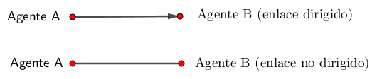
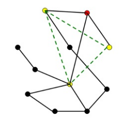
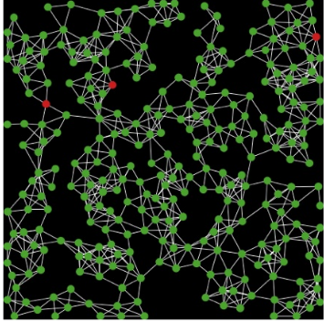

A Redes
A.1 Introducción
En capítulos anteriores, las interacciones fueron definidas por el entorno y los agentes se comportan de manera aleatoria, estos modelos no incluyen el hecho de que en los sistemas sociales reales las interacciones no son aleatorias.Hoy en día, muchas personas forman parte de sitios web de redes sociales como Facebook. Los miembros no se conectan de forma aleatoria a otros miembros, pero están conectados con sus “amigos.” Si miramos las redes en los sitios web de redes sociales observaremos una estructura, la estructura de una red puede afectar una serie de fenómenos sociales, por ejemplo, la propagación de un rumor. Si un miembro de Facebook bien conectado coloca un rumor en su página, esta información se difundirá mucho más rápido entre la comunidad de Facebook en comparación con el caso en el que el mismo rumor lo pone en la página una persona que solo tiene un amigo. Cuando incluimos estructuras de red en nuestros modelos basados en agentes, podremos estudiar el efecto de la estructura de la red en la difusión de información, normas, enfermedades, comportamiento, etc…
A.2 Conceptos Básicos de Redes.
Una red es una colección de nodos que están conectados por enlaces. Un nodo puede representar una persona, una familia, una nación, una computadora, una especie, etc. Los enlaces definen una relación entre nodos como la amistad, el parentesco, una carretera, quién-come-a quién, etc. En el modelo Netlogo tendremos agentes definidos como los nodos. Los enlaces están definidos por una categoría especial llamada enlaces (links) En la siguiente figura,un enlace representa que el agente A es el padre del agente B y es un enlace dirigido, pero un vínculo que representa una amistad entre los agentes A y B puede ser un enlace no dirigido. Es decir, si ambos agentes se ven como amigos.

Cada agente puede tener varios enlaces, la cantidad de enlaces que tiene un agente se llama el grado del agente, si un agente tiene cinco conexiones no dirigidas, diríamos que el grado del agente es cinco:
En algunas redes el grado es el mismo para cada agente, mientras que en otras, el grado es diferente para cada agente. La distribución de grados en una población de agentes es una característica importante de una red.Otra característica de las redes está definida por los caminos entre los nodos. En la figura a continuación, verá un camino entre los dos nodos rojos:
Hay varios caminos posibles, podemos calcular el camino más corto entre cada dos nodos de una red y luego tomar el promedio de estos caminos. Esto conduce al promedio de las longitudes de ruta más cortas de una red. La estructura de la red afecta la longitud del camino más corto y por tanto se convierte en un indicador importante para comparar redes. Cuanto menor el promedio de los caminos más cortos, más rápido esperamos que la información se difunda dentro de una red. Finalmente, miremos el coeficiente de agrupamiento de una red (clustering). Este coeficiente indica con qué frecuencia los enlaces de un nodo están vinculados entre sí. En las redes sociales podemos pensar en amigos de la persona A que también son amigos entre si, una mayor cantidad de amigos de amigos conduce a mayor agrupamiento. En la siguiente figura, puede ver que el nodo rojo tiene tres amigos (amarillos), pero ninguno de estos amigos está conectado. Por tanto, el coeficiente de agrupamiento del nodo rojo es cero:

Para calcular el coeficiente de agrupamiento de una red, tomamos el promedio del agrupamiento para todos los nodos de una red.
Una red se visualiza como un grafo. A menudo, estos grafos no tienen representación espacial, la tienen cuando representan carreteras u otras redes físicas. De lo contrario, estos grafos son solo una representación de las relaciones. Miremos una serie de diferentes tipos de redes y cómo se diferencian las métricas de red ( como longitud de la ruta más corta y agrupamiento (clustering))
A.3 Redes aleatorias
Comencemos mirando una red simple, la red aleatoria. En esta red hay una población de n nodos. Uno a uno agregamos enlaces entre nodos. Hacemos esto al azar eligiendo uno de los nodos y vinculándolo aleatoriamente con otro nodo. En Netlogo, verá que agregar un enlace aleatorio se realiza de la siguiente manera: Seleccione dos agentes y compruebe si ya existe un vínculo entre ellos. Para hacer esto utilizamos link-neighbor? X que es verdadera si hay un vínculo entre el agente y X. Si no hay ningún enlace, podemos crear un nuevo enlace entre los dos tortugas usando la función create-link-with X.
to add-edge
let node1 one-of turtles
let node2 one-of turtles
ask node1 [
ifelse link-neighbor? node2 or node1 = node2 [add-edge]
[ create-link-with node2 ]
]
end
En la siguiente figura , se puede ver cómo se visualiza la red durante la construcción de enlaces. En rojo se representa el componente conectado más grande de la red.
Podemos visualizar el tamaño relativo del componente más grande a lo largo del tiempo :
No todos los agentes tienen el mismo número de enlaces, pero cada uno tendrá un mínimo de un enalce1, ya que el modelo se ejecuta hasta que todas los agentes estén conectados. En este ejemplo vemosque el número de enlaces varía de 1 a 12. El grado medio es 4. La coeficiente de agrupamineto (clustering) es de 0.054 y el promedio de longitud de rutas más cotas es de 2.96 enlaces.
A.4 Redes de mundo pequeño
Es posible que tenga un encuentro con un extraño que está a pocos enlaces de distancia de ud en la red, podría estar a solo unos pocos apretones de manos del presidente de los Estados Unidos. Definamos aquí “apretón de manos” como literalmente estrechar la mano de alguien mano como te encuentras en persona. Excluyamos los apretones de manos que los presidentes dan a la multitud cuando tienen mítines. Entonces:
- ¿A cuántos apretones de manos se está del presidente?
Puede sorprenderse de lo pequeño que es este número para la mayoría de las personas. Hagamos esto con una persona elegida al azar de los miles de millones de adultos que viven en este planeta y tratar de definir a cuántos apretones de manos están lejos. ¿Alguna conjetura? Aquí esperaríamos que este número no sea mucho más que un puñado de apretones de manos.
Esto sugiere que la longitud promedio de caminos de las redes sociales en todo el mundo es pequeña.El psicólogo Stanley Milgram hizo un experimento en la década de 1960 en el que solicitó a varios personas en el oeste medio de los Estados Unidos, enviar una carta a alguien en Boston. Sin embargo, no se recibía la dirección de la persona, sino otro tipo de información como la ocupación. Para alcanzar su objetivo (la persona con la que quieren tener contacto), las personas tenían que enviar la carta a alguien que pensaban que tendría más éxito en encontrar el objetivo. Milgram estaba interesado en si las cartas llegarían a su objetivo y cuántas conexiones se necesitarían. No todas las cartas alcanzaron su objetivo, pero de aquellos que alcanzaron el objetivo, el número medio de enlaces fue de seis. Esto llevó al dicho que todas las personas están en promedio a solo seis apretones de manos. Este experimento se replicó 35 años después con correos electrónicos, y nuevamente el número promedio de enlaces entre la fuente y el objetivo se encontró que era de seis.
- ¿Es la red aleatoria un buen modelo para las redes sociales?
No, ya que las redes sociales tienen otro atributo distintivo. Muchos amigos de una persona también son amigos entre sí. Esto es llamado agrupamiento (clustering) dentro de las redes. Para calcular el coeficiente de agrupamiento de un nodo buscaremos a todos los amigos de este nodo, y contamos cuántas amistades posibles existen entre estosnodos. El total de amistades reales entre amigos se divide por el total posible de amistades. Este es el coeficiente de agrupamiento, que es de 0.054 en la red aleatoria del ejemplo. En redes aleatorias este coeficiente no es muy alto ya que muchas conexiones son al azar, y entonces los amigos no son amigos entre sí. Ahora veremos una red de mundo pequeño que captura tanto el alto nivel de agrupación como una longitud de trayectoria media corta. El modelo fue desarrollado por Duncan Watts y Steven Strogatz. Comenzaron con una red regular de nodos que están dispuestos en círculo. Cada nodo está conectado a dos nodos a la izquierda y dos nodos a la derecha, esto significa que el coeficiente de agrupamiento es 0.50, ya que el 50% de los enlaces entre los amigos de un nodo están conectados entre sí. Para una red de 100 nodos, la longitud de ruta promedio es de aproximadamente 13 enlaces. Cuando se vinculan algunos nodos sin vínculo, la longitud de ruta promedio disminuye significativamente. En la siguiente figura, el reenlace de cuatro nodos conduce a una caída en la longitud promedio de la ruta de 13 a 9 enlaces.
Al volver a vincular un nodo, elegimos un nodo A aleatorio y luego elegimos aleatoriamente de este nodo uno de los enlaces con otro nodo B. El nodo B luego se reemplaza con un nodo elegido al azar de toda la población de nodos, excepto el nodo A y los nodos existentes del nodo A. Una nueva función que usamos es end1, que indica el primer agente de un enlace. En un enlace dirigidoesta será la fuente, y para los enlaces no dirigidos será la tortuga con el número who más bajo. Primero verificamos si aún se pueden agregar nuevos enlaces al agente de interés. Si este es el caso, se coloca un agente que aún no está conectada con el agente de interés. Luego creamos un enlace entre ambas tortugas. En Netlogo esto se convierte en lo siguiente:
let node1 end1
if [ count link-neighbors ] of end1 < (count turtles - 1)
[
let node2 one-of turtles with [
(self != node1) and (not link-neighbor? node1) ]
ask node1 [create-link-with node2]
]
Cuando comencemos a volver a enlazar, haremos cortes transversales de una parte de la red a otra. Esto conducirá a caminos más cortos entre los extremos de la red. Si volvemos a vincular muchos nodos, la longitud promedio de los caminos inicialmente disminuirá rápidamente.El coeficiente de agrupamiento se mantiene inicialmente alto, los atajos reducen la ruta longitud entre nodos de ambos lados de la red, pero no afectan la vinculación entre amigos.Solo unos pocos enlaces conducen a redes con alta agrupación (clustering) y una longitud promedio de caminos baja. Ésta es la característica de las redes de mundo pequeño, este es también el tipo de redque encontramos en las redes sociales. La mayoría de las personas están agrupadas y los amigos de los amigos son amigos. Pero si solo un pequeño porcentaje de las amistades son con personas muy diferentes, el promedio de longitudes de camino será pequeña.
A.5 Redes sin escala
La última red que discutiremos es la red sin escala, la red sin escala captura la observación de que la distribución de grados no es normalmente distribuida en muchas redes del mundo real, por ejemplo, muchos sitios web no se enlazan con otros, pero algunos tienen muchos enlaces, estos se denominan centros o “hubs” Si trazamos la distribución de grados en una escala logarítmica , vemos una gráfica lineal. Si fuera una distribución normal, la frecuencia de observaciones con un alto grado, digamos 100, estaría cerca de cero. Esto significa que en una distribución sin escala, la distribución tiene colas grandes, hay más valores atípicos de los que habría en una distribución normal. Este tipo de distribuciones de grados de una red sin escala se han encontrado en muchas redes. A menudo no siguen una línea recta para toda la distribución, sino para una gran parte de ella
Barabasi y Albert (1999) publicaron un modelo simple que genera redes que tienen un distribución de grados libre de escala. El modelo se basa en el llamado apego preferencial:
Empezando con dos nodos, cada nuevo nodo estará vinculado a la red existente, pero con un mayor preferencia a los nodos con mayor número de grados. Por tanto, los nodos con alto grado tienen un mayor probabilidad de conectar más nodos. Esto también se llama “los ricos se vuelven más ricos”. Para modelar el proceso de crear nuevos enlaces con base en los nodos y enlaces ya existentes en la red e implementarlo en Netlogo hay que hacer lo siguiente:
Primero calculamos un valor aleatorio entre 0 y el número total de grados en la red. Luego, en orden aleatorio, los grados de los agentes se agregan hasta que el algoritmo sobrepasa el número acumulativo de grados del número aleatorio generado inicialmente, cuanto más alto sea el nivel del grado, más probable es que se dibuje una tortuga.
let total random-float sum [count link-neighbors] of turtles
let partner nobody
ask turtles
[
let nc count link-neighbors
if partner = nobody
[
ifelse nc > total
[ set partner self ]
[ set total total - nc ]
]
]
En la Figura se ve una instantánea del proceso de generación de la red preferencial, el tamaño de los nodos es proporcional al grado. Vemos algunos hubs y muchos nodos que simplemente están conectados a otro nodo.
La siguiente figura muestra la distribución de grados de una red de 100 nodos. La distribución se aproxima a una distribución libre de escala, lo que significa que es una línea recta en una escala logarítmica del número de nodos y el grado. La red tiene 66 nodos con grado uno, y solo dos nodos con un grado superior a 8. El coeficiente de agrupamiento es 0, ya que los amigos de los amigos no son amigos. El camino promedio longitud es 4.14, que es mayor que la longitud de ruta promedio cuando la red es generada (2,96).
A.6 El Modelo SIR
Una forma clásica de describir la difusión de una enfermedad en una población es distinguir tres tipos de agentes:
- Susceptibles, Infectados y Recuperados.
El llamado modelo SIR, se estudia típicamente usando ecuaciones diferenciales. Hay tres variables, S el número de susceptibles, I el número de infectados y R el número de recuperados. Si no consideramos el cambio en la población y solo miramos el virus, podemos observar que el número de susceptibles disminuye con el tiempo. La tasa de esta disminución depende del número de personas infectadas y depersonas susceptibles. Cuantas más personas susceptibles haya, más personas pueden infectarse y cuantas más personas infectadas haya, más pueden infectar a las personas susceptibles. beta es la tasa de contacto entre las personas:
\[ \frac{dS}{dt}= -\beta IS \] El número de personas infectadas es el número de personas que se infectan menos el número de personas que se recuperan, las personas se recuperan a una rata fija dada por \[ v \]:
\[ \frac{dI}{dt}= \beta IS - vI \] \[ \frac{dR}{dt}= vI \] Ahora podemos definir R0 , que se llama el coeficiente básico de reproducción, este coeficiente se obtiene considerando el número esperado de nuevas infecciones de una infeción en una población de susceptibles. Si \[ R0 > 1 \] , más persoans se infectan y la infección se exapnde, para combatir la epidemia se necesita que \[ R0 < 1 \]
\[ R0=\frac{\beta }{v} \] ## El Modelo SIR en una red
El modelo basado en ecuaciones diferenciales como se describe arriba asume que hay muchos agentes que interactúan aleatoriamente. Ahora discutimos un modelo basado en agentes en el que se distinguen agentes susceptibles, infectados y recuperados. Se colocan agentes conectados en una red. La red se genera de la siguiente manera. Primero todos los agentes se colocan al azar en el paisaje.
create-turtles num-nodos
[
setxy random-xcor random-ycor
]
Luego definimos la cantidad de enlaces que se generarán de manera que la red tenga un grado promedio medio específico ( grado-promedio-de-nodos)
let num-enlaces (grado-promedio-de-nodos * num-nodos) / 2Los enlaces se agregan uno por uno hasta que se alcanza el número de enlaces. En cada tick uno de los agentes se selecciona al azar, se selecciona el agente más cercanoa esta y se establece un enlace (link) entre estos dos agentes
while [ count links < num-links ]
[
ask one-of turtles
[
let choice
(min-one-of (other turtles with [not link-neighbor? myself])
[distance myself])
if choice != nobody [ create-link-with choice ]
]
]
Los agentes que están conectados pueden afectar el estado de los demás. Los agentes infectados pueden infectar agentes susceptibles. Cada vecino susceptible de un agente infectado tiene la probabilidad prob-difusión-virus de infectarse. Cada agente infectado tiene una probabilidad prob-recuperar de recuperarse. Si un agente se recupera, puede volverse inmune con probabilidad prob-inmunidad o volverse susceptible de nuevo. Esto se modela en Netlogo de la siguiente manera:
ask turtles with [infectado?]
[
ask link-neighbors with [not resistente?]
[
if random-float 100 < prob-difusión-virus
[
set infectado? true
set resistente? false
set color red
]
]
]
ask turtles with [infectado?]
[
if random 100 < prob-recuperar
[
ifelse random 100 < prob-inmunidad
[
set infectado? false
set resistente? true
set color gray
]
[
set infectado? false
set resistente? false
set color green
]
]
]
Vemos que el virus se propaga por la red:

Inicialmente, tres agentes son infectados y en unos pocos pasos vemos que el color rojo comienza a extenderse. Si la probabilidad de volverse resistente a la infección es alta, la enfermedad deja de propagarse de manera temprana en comparación con el bajo nivel de prob-recuperar, se muestra que con un valor bajo de prob-recuperar, el virus se propaga a aproximadamente el 40% de la población ya que los agentes se enferman nuevamente después de la recuperación (volviéndose susceptibles), y la infección se contiene hasta debajo de un 10% con prob-recuperar igual a 50%.
Ahora exploraremos las consecuencias de los parámetros, prob-recuperar y prob-difusión-virus , asumimos que los agentes que se recuperan no vuelven a ser Veremos las consecuencias para los grados promedio 4, 6 y 9 para una población de 500 agentes. Cada combinación de parámetros se ejecuta 100 veces. Se muestra que un grado más alto conduce a que más agentes contraigan el virus. Además, vemos que una mayor probabilidad de propagar el virus conduce a que más agentes se enfermen y una menor tasa de recuperación también conduce a que más agentes se enfermen.

A.6.1 Intervención de políticas
Para detener la propagación de enfermedades infecciosas, tenemos varias opciones. Podemos vacunar a las personas si hay una vacuna disponible. Otra opción es reducir las interacciones entre agentes. En la práctica, las escuelas suelen estar cerradas durante un brote de un virus, ya que los niños son un anfitrión eficaz en la propagación de enfermedades como la gripe. Con enfermedades de transmisión sexual como el SIDA, dirigirse a las prostitutas es un enfoque común, ya que son los ejes de interacciones entre agentes. Como ejercicio implementamos la opción de desactivar un agente haciendo clic en ellos con el mouse. Ejecute el modelo y vea si puede aislar el virus:
Como puede ver, este no es un enfoque fácil, otro enfoque es desactivar los enlaces con los grados más altos. Para modelar esto en NetLogo creamos un bucle while y en cada iteración encontramos uno de los agentes que tiene la mayoría de vecinos y aún no se ha aislado. Luego aislamos ese agente. Cuando un agente es aislado le damos el color azul.
let i 0
while [i < numberofisolatedagents]
[
let target max-one-of turtles with [color != blue] [count link-neighbors]
ask target [
set infectado? false
set resistente? true
set color blue
]
set i i + 1
]
Simulamos el modelo 1000 veces para aislar diferentes números de agentes y vemos que más agentes no se van a enfermar.
¿Cuál es el beneficio de aislar a una persona? En la gráfica se muestra que por cada persona aislada, en promedio, una o dos personas más se salvan.Sin embargo, después de aislar 80 agentes, el beneficio marginal comienza a disminuir. Al observar un ejemplo de lo que está haciendo la estrategia (Figura 7):
vemos que al aislar los agentes con los grados más altos no es necesario ya que son, de hecho, agentes aislantes lejos de la infección. Además, no aísla la propagación de la enfermedad. Por supuesto, la estrategia más eficaz sería aislar los nodos próximos a los agentes infectados, pero esa no sería una estrategia justa, ya que la computadora es tan rápida como la velocidad de luz a diferencia de las políticas reales. Supongamos que podemos aislar un agente en cada tick:
¿qué agentes querríamos aislar?
Podemos elegir un agente con el grado más alto en cada tick dentro de un radio X de agentes que estén infectados. Un radio más pequeño indicaría que el controlador que está aislando agentes tiene mejor información sobre dónde se encuentran los agentes infectados. No es sorprendente que veamos que una distancia corta conduce a un mejor rendimiento (Figura 8). Pero no demasiado cerca, ya que podría no haber una cantidad suficiente de nodos altamente conectados en un radio pequeño que podrían detenee la propagación. La Figura 8 también muestra que más de 50 agentes aislados comienzan a dar menos efecto por agente aislado. Aunque los agentes no están aislados al comienzo de la simulación, el rendimiento es mucho mejor que aislar agentes con un alto grado al inicio de la simulación.
.